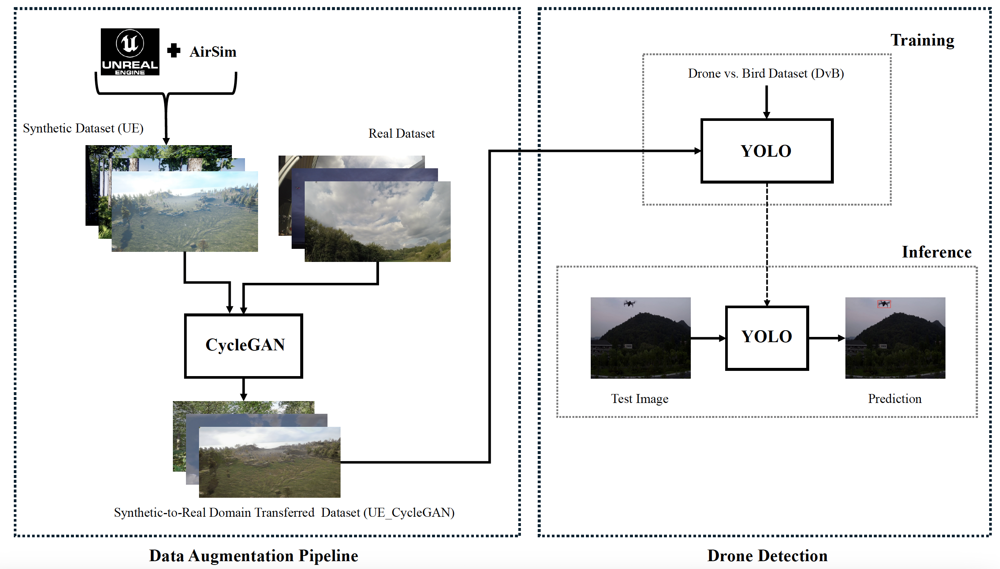

ICPR 2024 · Springer LNCS
This work presents a data augmentation pipeline for enhancing UAV detection by combining synthetic imagery, synthetic-to-real translation, and object detection training. The pipeline uses synthetic UAV imagery generated in a simulation environment and translates it toward the real image domain to improve detector generalization on real-world UAV surveillance datasets.

Long-range UAV detection is challenging because drones are often small, low-resolution, and difficult to distinguish from cluttered backgrounds. Collecting and annotating large-scale real UAV datasets is also expensive. To address this, our work investigates whether synthetic UAV imagery and synthetic-to-real image translation can improve real-world UAV detection.
Inference results of YOLOv8m trained on six dataset compositions and evaluated on three unseen real datasets — DetFly, Drone Detection, and UAV Detect. Augmenting real data (DvB) with Unreal-Engine synthetic data, and especially with CycleGAN-translated data, consistently improves long-range drone detection. Bold marks the best score per column.
| Trained model | DetFly | Drone Detection | UAV Detect | |||
|---|---|---|---|---|---|---|
| mAP50 | mAP50-95 | mAP50 | mAP50-95 | mAP50 | mAP50-95 | |
| DvB50 | 0.462 | 0.220 | 0.660 | 0.282 | 0.580 | 0.288 |
| DvB50 + UE | 0.475 | 0.240 | 0.660 | 0.282 | 0.574 | 0.306 |
| DvB50 + UE_CycleGAN | 0.524 | 0.262 | 0.614 | 0.263 | 0.601 | 0.334 |
| DvB80 | 0.461 | 0.226 | 0.645 | 0.292 | 0.610 | 0.328 |
| DvB80 + UE | 0.487 | 0.238 | 0.677 | 0.300 | 0.575 | 0.304 |
| DvB80 + UE_CycleGAN | 0.510 | 0.246 | 0.694 | 0.311 | 0.612 | 0.352 |
Table 1: Inference results on DetFly, Drone Detection, and UAV Detect. Best per column in bold.
Code, configuration files, and reproducibility instructions will be added to this repository.
@inproceedings{arezoomandan2025data,
title={Data Augmentation Pipeline for Enhanced UAV Surveillance},
author={Arezoomandan, Solmaz and Klohoker, John and Han, David K.},
booktitle={Pattern Recognition. ICPR 2024},
series={Lecture Notes in Computer Science},
volume={15306},
pages={366--380},
year={2025},
publisher={Springer},
doi={10.1007/978-3-031-78172-8_24}
}For questions about this work, please contact Solmaz Arezoomandan.